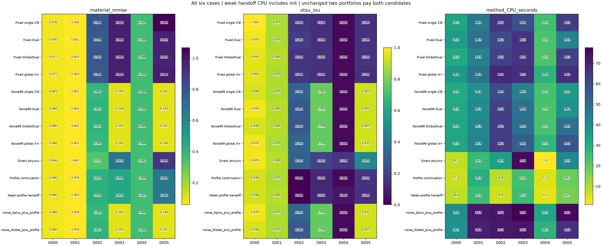
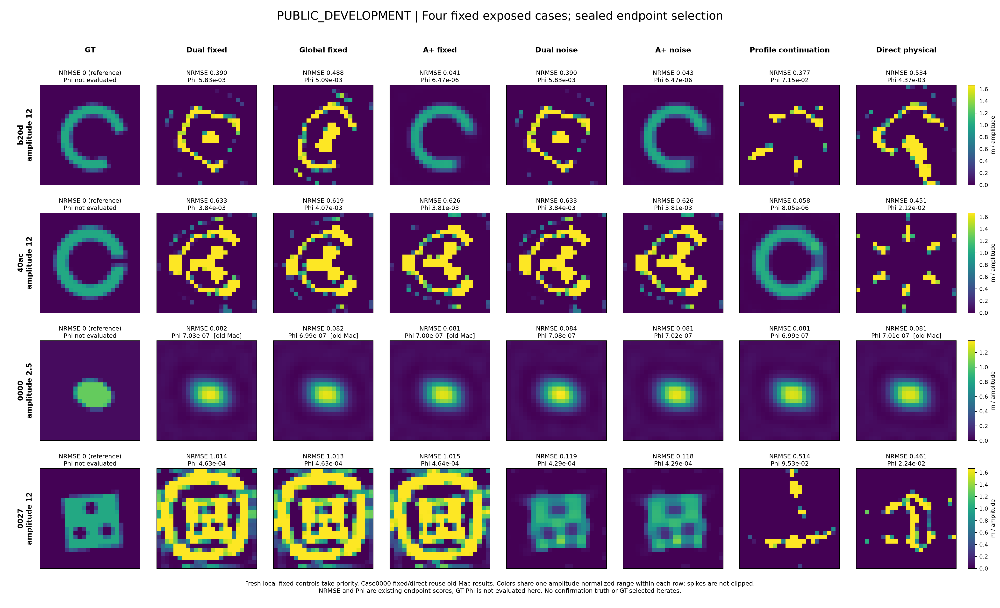
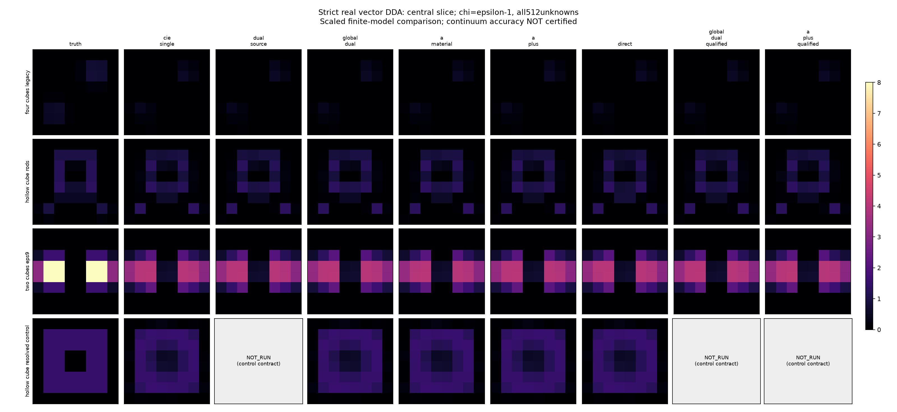

A+保住历史弯条
公开b20d上A+的NRMSE约.0406，普通Dual／Global约.390／.488。它确实改变了有用的搜索路径，但该对象已经公开，不能重新称为盲测突破。
从空间本构残差、硬DPCS和完整Maxwell目标出发，将算法增量、噪声放大与三维模型误差分开检验。保留A+的历史正例，也公开共同失败和额外成本。
中间公开版本，实验仍在执行。二维机制研究和29次小型真矢量三维反演已完成；原Austria对照与原3λ三维诊断正在远端继续。这里没有把未完成实验计入结论。
固定DPCS截断会硬锁被放大的噪声。按公开噪声球选择强模态后，普通CIE和A+共同改善；这不是A+独有收益。
| 方法 | 材料成功 | 平均NRMSE | 平均CPU秒 |
|---|---|---|---|
| 原单β CIE | 2/6 | .55754 | 48.43 |
| 原Global-Dual | 2/6 | .54211 | 47.96 |
| 原A+ | 2/6 | .54352 | 52.67 |
| 噪声适配单β CIE | 4/6 | .18666 | 38.84 |
| 噪声适配Global-Dual | 4/6 | .18766 | 42.98 |
| 噪声适配A+ | 4/6 | .18552 | 46.37 |
同一有限二维数据、576个材料未知量、先验与原物理候选选择；所有预测先封存后评分。平均误差略低不等于新增成功。真实预算切片与失败见完整报告。

公开b20d上A+的NRMSE约.0406，普通Dual／Global约.390／.488。它确实改变了有用的搜索路径，但该对象已经公开，不能重新称为盲测突破。
公开40ac上，低罚权current阶段＋原物理校正得到NRMSE .05835，含初始化19.63 CPU秒；完整延拓28.10秒。这个简化未带来新六例的额外恢复。

512个独立实材料未知量、三分量电流与dyadic Green，完成四类对象29次反演。共同物理校正后，A、A+与Global-Dual终点接近，未看到稳定的A+成本优势。

ε9球的独立Mie误差在16网格仍约43.1%；加入标准单元Green积分后约43.4%，没有修复。原3λ任务的CM+RR粗细网格观测差约53.5%，正在做独立物理诊断，不能据此宣布某优化器优胜。
二维四lane分别固定在P核；三维采用resident complex128 CUDA/cuFFT。一次三维完整current＋material步由2.98秒降至1.02秒。二维4096未知量整value＋gradient仅从1.40秒降至1.10秒，因此继续用四P核吞吐，不盲目迁移到单GPU。
这些是具体工作量的工程测量，不是材料恢复优势，也不是整轮反演统一加速倍数。失败、迁移中断、预计算及冷启动均保留。
实际资源与费用边界 →